色鉛筆/鉛筆——人物
色鉛筆/鉛筆——人物色鉛筆/鉛筆——人物
我從國中開始自己嘗試畫人物，媒材是選擇比較好處理的鉛筆和色鉛筆，雖然我有上美術課，但我在課堂上只有練習水彩和基本的素描技巧，所以這方面的能力完全是自己發展的，圖片的排序由近到遠。

採用部分上色的方式來強調臉、頭跟火焰。 圖源

這是我首次嘗試「非仿畫」的作品，融合了星爆的動作、有紀的角色設計還有表情，而我對於此次的創作也是相當滿意<(▰˘◡˘▰)>。也因為這張不是仿畫，所以這也是我少數有簽名的圖。
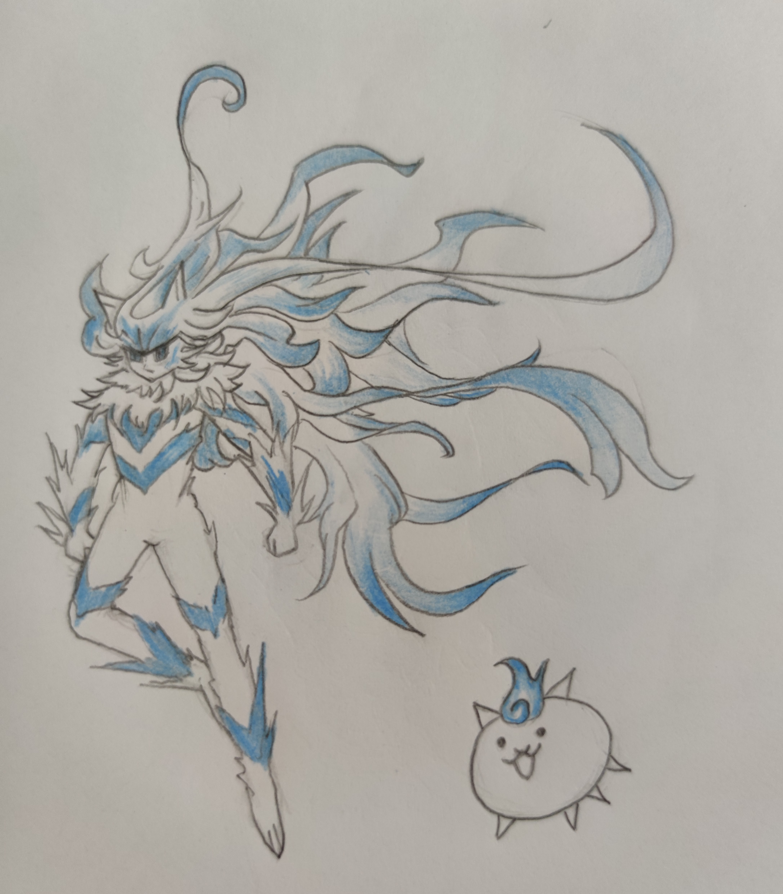為了讓畫主圖時更快進入狀態，我最近會在主圖之前先畫一張比較簡單的圖來熱身，而這就是其中一張作品。圖源：貓咪大戰爭。
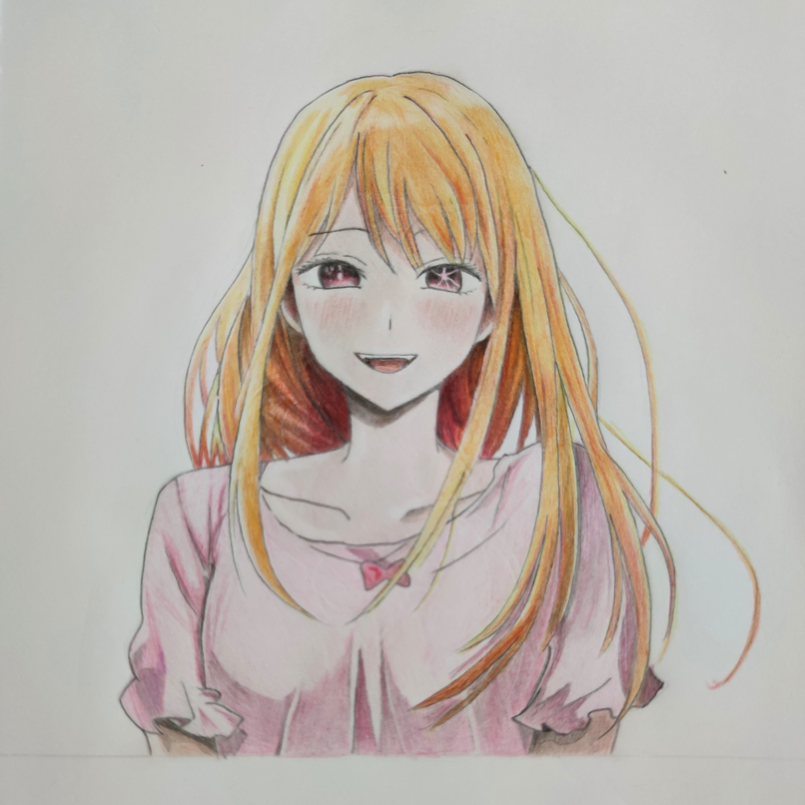主要在色鉛筆的處理方面相當有料。 圖源

在畫本張圖之前，我根本沒在打草稿，但是一次畫兩個角色的時候顯然不能這樣搞，所以我第一次有認真打草稿，之後也慢慢養成這個好習慣，以結果來說，我覺得草稿打完的效果是蠻不錯的。 圖源

我少數用色鉛筆有畫背景的圖，不過...我覺得加了背景反而讓畫面有點亂了... 圖源
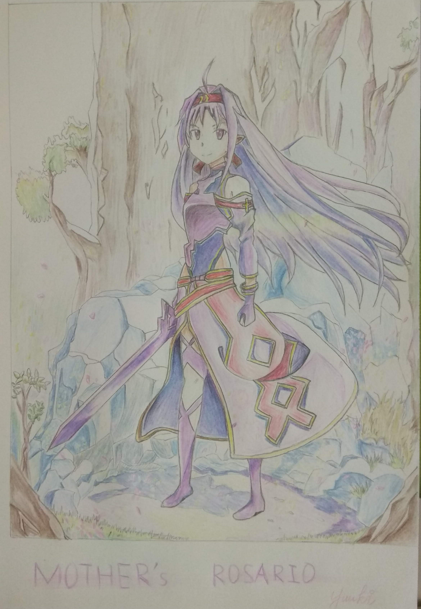老實說這張圖我畫了兩次，這是第一次，第二次是用水彩（下面有），這是2021年畫的，算是我相當早期的作品了～ 圖源
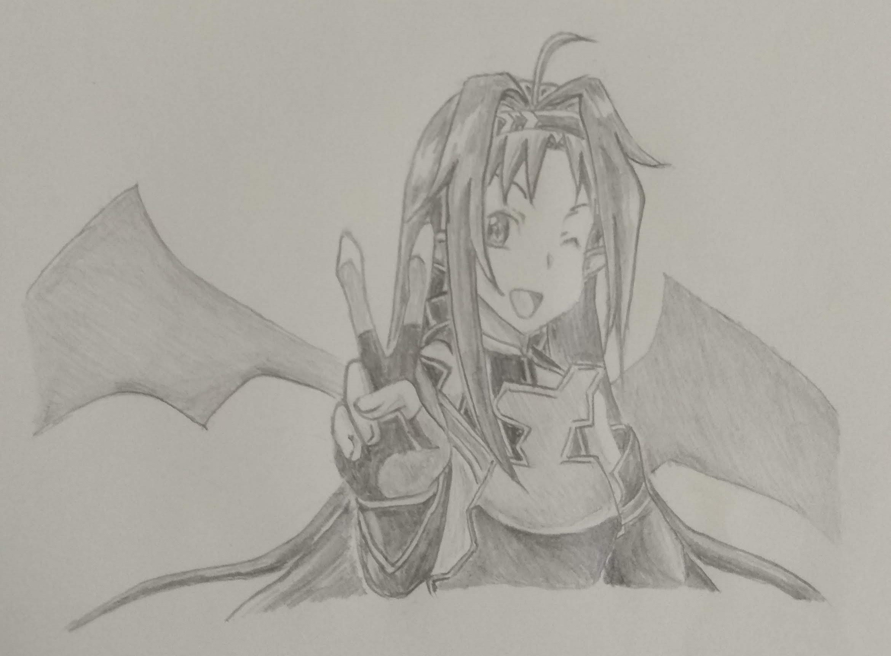目前有放上來的色鉛筆作品中最早的，可以看得出來我剛開始練習畫時下筆都非常的小力。圖源：刀劍神域動漫內截圖。
水彩——人物
此項目目前有三張圖。

沒錯，這跟上上一張是相同的圖喔～，是為了2022年的有紀生日畫的。看得出來臉有一點崩，不過衣著的光影跟背景我都處理得蠻滿意的，也呈現出了和原圖不太相同的風格。 圖源

首次嘗試用水彩畫人物，也因為比較大張需要從骨架開始打草稿，算是一次不錯的嘗試；至於右下角的字...我記得那是某款刀劍遊戲的卡面名稱，我就挪來用了。 圖源

2024年的有紀生日賀圖，直接把沉睡騎士畫出來了～我從2023年十月開始規劃，一月開始畫，到五月才完成，總共花了40個小時。 圖源
水彩——其他
有在美術班學的部分，描繪的對象依序是幾何模型→水果→蔬菜→盆栽→玻璃→玻璃盆栽→大盆栽＋少數小盆栽→大張作品（四開），為了清楚地展現歷程，這部分的圖我會由舊到新。
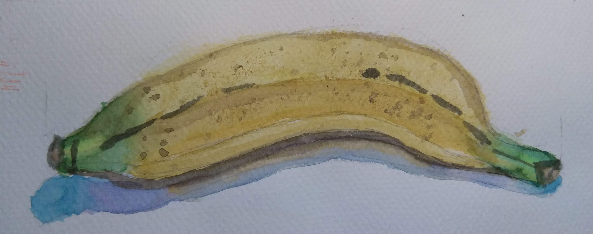就是一根香蕉。我剛開始練習的時候美術老師會建議我把影子加上漸層，並且不要只使用黑色系，後來我也保持著這個方法，可以增加畫面的豐富度。
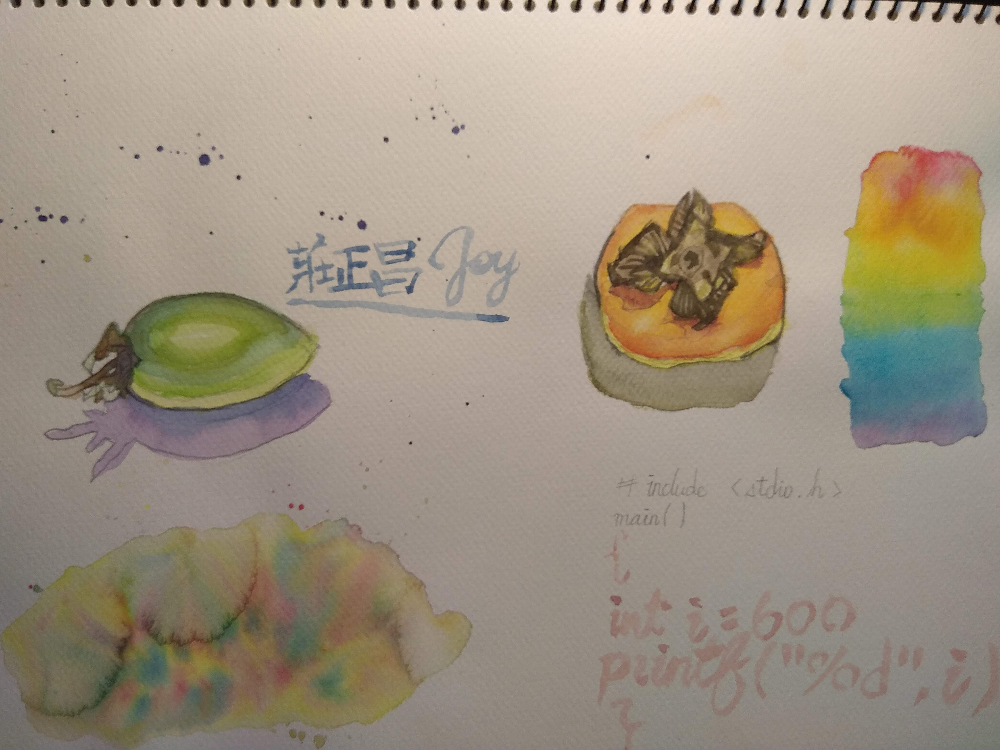如果有人看不出來的話，左邊是番茄。可以看到我早期畫水彩的時候很喜歡在畫面空白處加些奇奇怪怪的東西，甚至連程式碼都用上了...（好像是我當時有上國中的C語言課程）
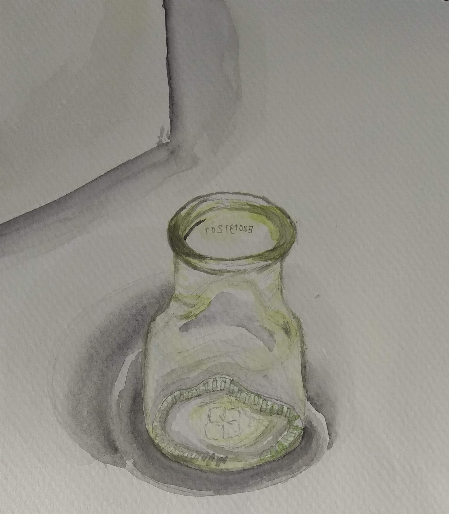直接跳過蔬菜和小盆栽，好欸。左上方是窗戶，沒記錯的話應該是我第一次畫玻璃。
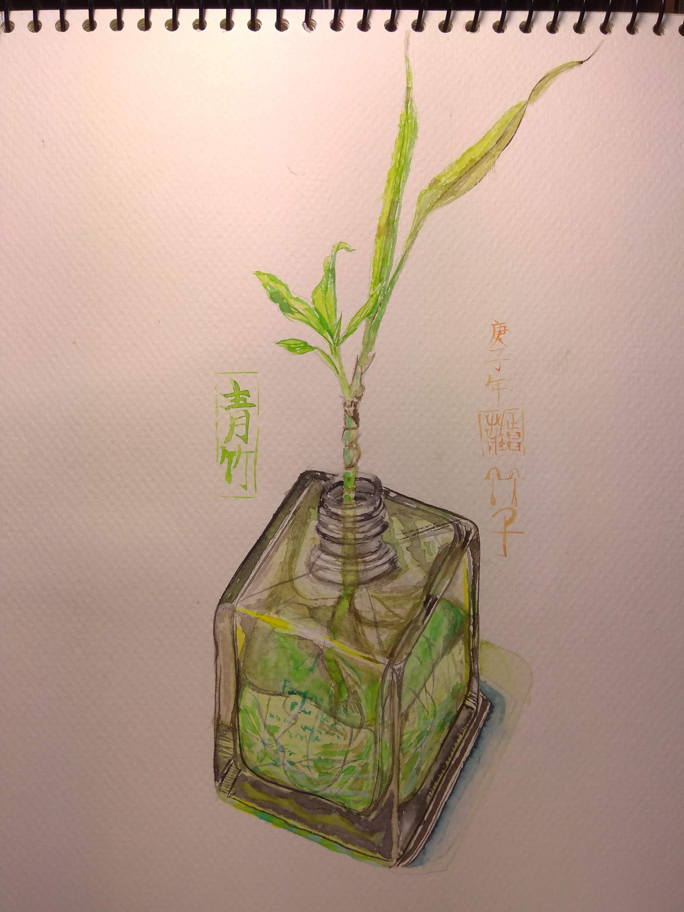仔細看可以看到，其實這張圖細部有一些斑駁的色塊沒有處理得很好(例如竹葉的部分)，但是整體看起來很有風格，因為很滿意這張，它直到現在都還是我手機的桌布～
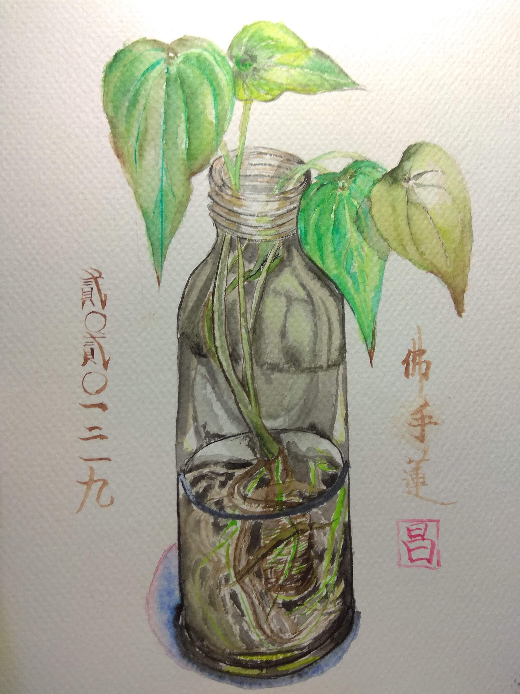這段時間的圖我都有加上手繪的「印」章（從塗鴉風進步了！），內容通常是植物種類、姓名、年份、季節等，一直到我開始畫四開畫後才結束（因為背景已經夠豐富，不想干擾畫面）。
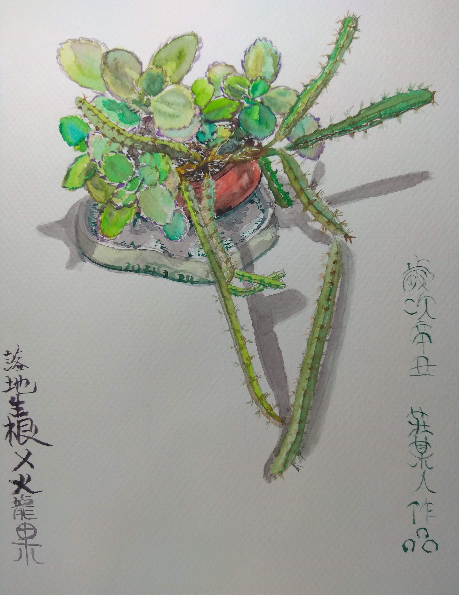開始畫大盆栽，或是好幾種植物組合的盆栽，光影也隨之變得更複雜了。至於下方的字...可能是想模仿小篆然後失敗了吧，而且說個笑話，我國小還有學過書法呢...
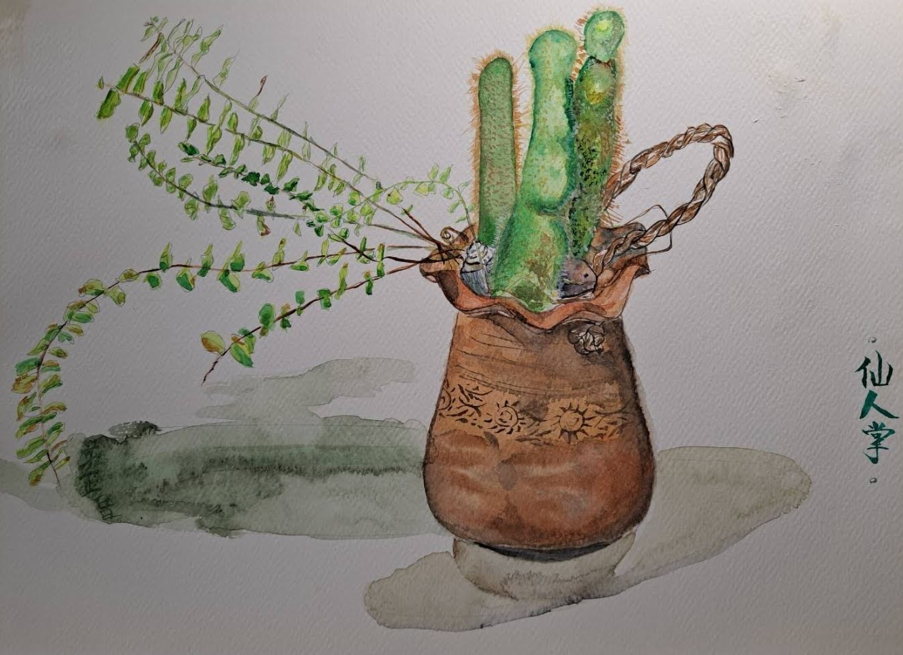突然想不到要說什麼，總之這是仙人掌。

這是聖誕紅，原本是打算聖誕節畫完，但我實際上畫到隔年才完成：），這也是我進入四開的大張畫作前最後一幅作品。
大張畫（四開）
承上，我最近這一段時間（快一年了）的水彩都是畫四開大小，內容由許多元素組成，畫面也因此比之前的作品更加複雜，到目前為止共有三張作品，一樣按照順敘法排列圖片。

這張是第一次嘗試，我對於其中鳥巢蕨的效果很滿意，不過有個小問題：我當時是先畫背景才畫植物，但上色時一直畫出界，導致邊界的顏色有點糊掉，後續的作品就把上色順序改回來了。
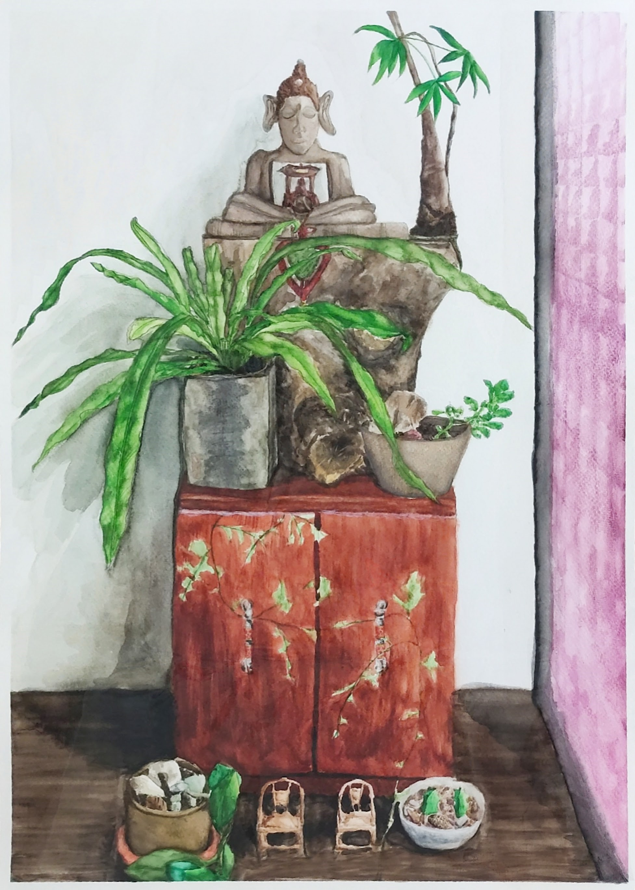比起上次，這次在木材質地、背景的處理上都有進步，畫面的物件擺放本身也比較整齊，不過那個紫色玻璃可能有點太鮮豔了。

這張的宗教元素比重比之前更為增加，處理時的重心也偏重在非植物的物件上。
電繪
我學習電繪的契機是高二上的自主學習計畫，而我也發現電繪有多耗時間。和手繪不同的是，因為電繪的圖可以放大、回到上一步，總會讓我想把圖處理得盡可能完美，結果就是，花費時間常是手繪的三、四倍以上，舉例來說，雖然我自主學習計畫（一學期）中的四張作品都有如期完成，但那是動用了大量的課後和週末時間，基本上可說是爆肝後壓死線才完成的（不過作為回報，成品也都是相當精緻啦～）。喔對了，我的繪圖軟體是用MediBang Paint，觸控筆和螢幕直接用家裡的平板，也就是說，我半毛錢都沒花喔：）
前期還在熟悉操作跟觸控筆的手感，因此從Q版人物開始。 圖源
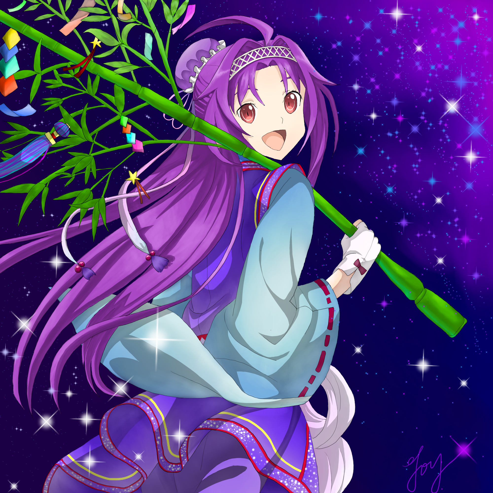別看這張圖不大，我可是花了20小時阿...（手繪同等級約需5小時），不過也多虧了電繪好處理漸層的特色，角色衣服的質感讓我非常滿意，至於那個竹子就請忽略啦哈哈。
圖源

圖太複雜了所以特別放大一點。我一開始是花了好幾個小時打完草稿，結果還沒存檔程式突然當掉，檔案就消失不見了，直接原地崩潰...後來因為時間不夠直接描圖，把重心放在上色。上色的過程中我大量使用模糊跟透明化，除了處理漸層之外也把背景的物件變的比較不搶眼，不然畫面會太雜亂，最後總計花了30小時（不含一開始被消失的草稿）。 圖源

沒錯，這張就是網頁標題的頭像，因為藝術生活課太水，所以我直接開始畫自己想畫的東西：）至少我還是在做跟美術有關的事情嘛。角色的輪廓就是Padoru，但我在服裝設計上遇到了相當大的問題，主要是我沒什麼美感，就像你正在看的這個網頁一樣慘，幸好，在超級大佬帳號波的指點和討論下，成功設計出了一套可以合理又可以展現特色的服裝，在此致上對帳號波大佬萬分的感謝。🛐🛐🛐🛐🛐🛐🛐🛐🛐🛐🛐
網頁成發——工具大雜繪
就是歷史紀錄頁面最早一條紀錄所述的小工具集錦，是當時網頁小社課的期末成發，不過因為沒有花太多時間製作，功能跟排版的部分看起來頗為原始，以下該頁面的各個連結跟簡介。
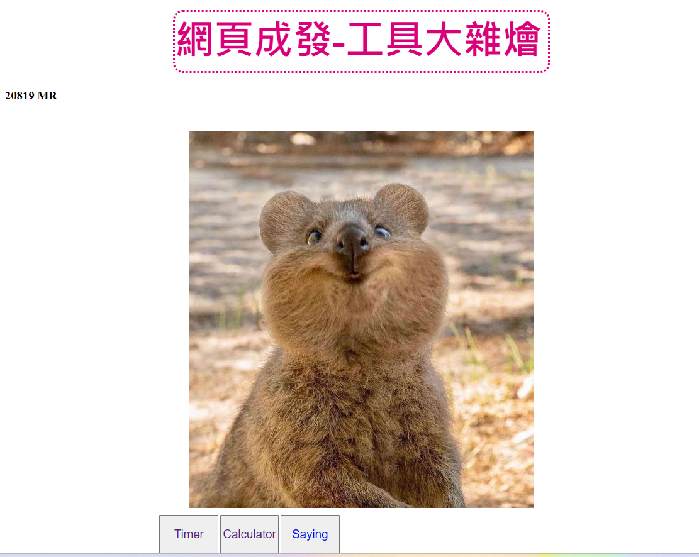首頁：有含超連結的div按鈕可以導向三個小工具，還有酷炫變色標題喔喔。
計時器：清爽的風格～
計算機：清爽的風格～
我也不知道這叫什麼：總之這是CSS練習～
Unity遊戲——SquareParkour
這是我用Unity製作的平台跑酷遊戲，玩家需要一邊在平台間跳躍、一邊躲避陷阱以及敵人的攻擊，最後到達終點。遊戲一共有十個關卡，而我同學打了一個下午也才通過第三關，可見其相當有難度。
我把遊戲輸出後上傳到itch.io上，分為PC版跟網頁版，連結如下：
PC版：下載installer後依照指示即可安裝在電腦上。
網頁版：可以直接於itch.io上遊玩，開啟全螢幕模式效果更佳。
然後，為了證明真的有辦法過關，我把十個關卡的通關影片都傳到YT了，需要的話可以參考一下：
SquareParkour通關紀錄。
開發中的畫面，其實寫遊戲的感覺跟一般的寫程式很不一樣，需要同時顧及到程式、遊戲物件、動畫、音效等等的關係，還需要處理UI編排等問題，大部分的時間反而都不是花在程式上......
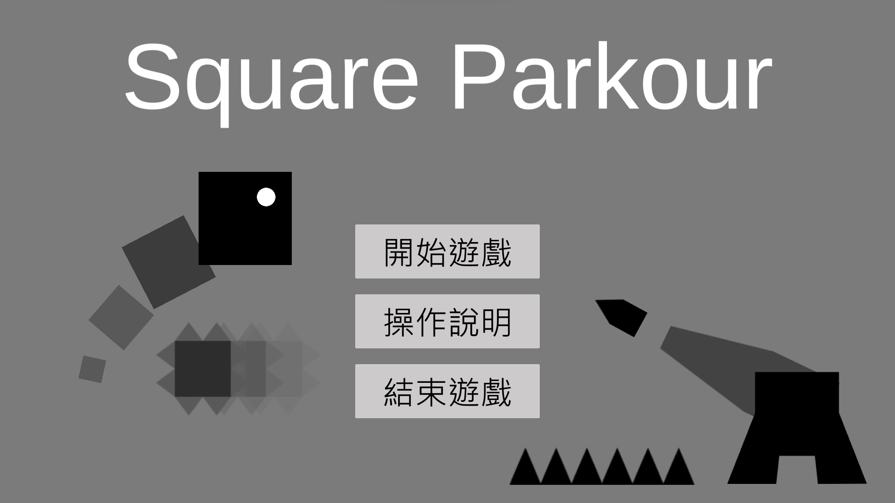這是完成作品的開始畫面。
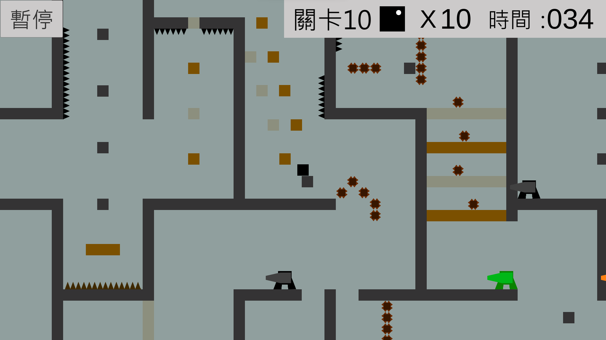這是在最後一關的「迷宮」裡的畫面，可以看到包含了各種奇形怪狀的陷阱。
啊，死了。
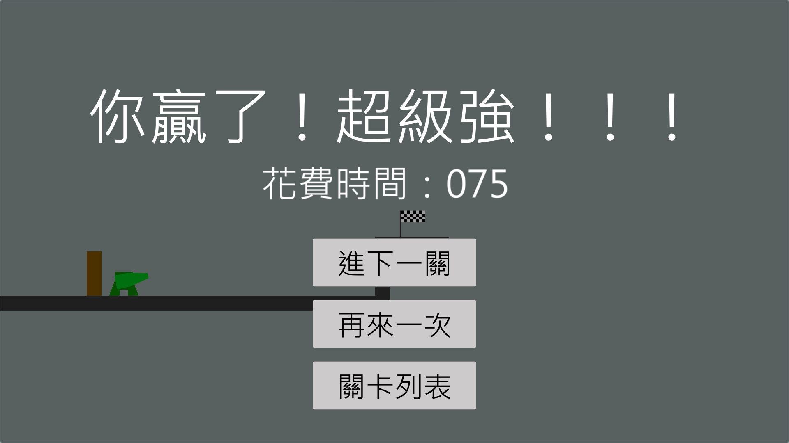啊，過了。